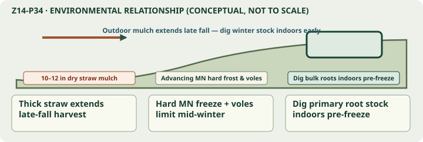

Z14-P34 · Food production and preservation · New manuscript
Recognize safe outdoor mulch-storage limits for hardy roots in northern climates
Understand when deep straw mulch keeps parsnips or carrots usable outdoors in late autumn and where Minnesota deep-freeze/rodent limits stop it.
When it applies · Hardy root crops (parsnips, late carrots, leeks) left briefly in well-drained garden beds past light autumn frosts.
Equipment · Thick 10–12+ inch clean straw/leaf mulch, garden stake markers, and indoor cold-storage backup.

Actions
- Recognize that light autumn frosts sweeten hardy parsnips and carrots—a thick 10-to-12-inch blanket of clean dry straw placed over well-drained rows before the soil freezes solid can extend outdoor harvest a few weeks into late autumn (and parsnips often overwinter cleanly for early spring digging after thaw).[P05, P19]
- Respect strict Upper Midwest reality: once Minnesota ground freezes rock-hard beneath deep snow in December–February, digging frozen garden rows becomes nearly impossible and hungry voles/mice tunnel beneath thick straw blankets to eat buried roots.[P05, P19]
- Harvest the bulk of winter storage carrots, beets, and potatoes cleanly into controlled indoor cold storage BEFORE hard ground-freeze arrives rather than gambling winter calories on buried garden beds.[P04, P05]
Failure recognition · Leaving the entire winter carrot harvest buried outdoors in northern Minnesota expecting to dig fresh carrots in minus 10°F January ground.[P05]
Verify · Confirm well-drained soil, stake markers visible above snow, and primary winter root supplies stored safely indoors before hard freeze.[P05]
Stop or change course · Waterlogged clay beds or heavy vole activity prohibit outdoor winter root mulching—dig and move roots indoors early.[P05]
Evidence and editorial notes
- P04 · University of Minnesota Extension · Harvesting and Storing Home Garden Vegetables (current web edition)
- Section: Harvesting Maturity, Curing, and Post-Harvest Handling · Conditions: Home garden root crops, winter squash, onions, potatoes, and greens
Support: Harvest crops at proper maturity during cool morning hours without bruising, cure storage crops (onions, garlic, winter squash, potatoes) at crop-specific warm/dry conditions before cold storage, and cull any nicked or diseased items for immediate use.
Limitations: A single bruised or rotting vegetable spreads decay rapidly across an entire storage bin. · Conflicting evidence: None; explains why curing precedes long cold storage.
Editorial note: Anchors harvest-to-storage quality gates in Z14. · Specialist reviewer: Post-harvest horticulture specialist
Primary source · checked 2026-11-24 - P05 · University of Minnesota Extension · Harvesting and Storing Home Garden Vegetables (current web edition)
- Section: Root-Cellar and Cold-Storage Temperature/Humidity Zones · Conditions: Basements, root cellars, unheated porches, and insulated cold bins
Support: Match stored produce to distinct storage regimes: cold-moist (32–40°F, high humidity for carrots/beets/cabbage), cool-moist (45–50°F for potatoes), cold-dry (32–35°F dry for onions/garlic), and cool-dry (50–55°F dry for winter squash); separate ethylene-producing apples from sensitive vegetables.
Limitations: Storing potatoes below 40°F converts starch to sugar; freezing temperatures ruin unhardened stored roots. · Conflicting evidence: None; prevents treating one basement temperature as universal for all crops.
Editorial note: Core root-cellar zoning and monitoring evidence in Z14. · Specialist reviewer: Post-harvest horticulture and food storage
Primary source · checked 2026-11-24 - P19 · University of Minnesota Extension · Planting the Vegetable Garden (current web edition)
- Section: Season Extension, Cold Frames, Seed Saving Limits, and Succession Planting · Conditions: Northern short-season gardens seeking spring/fall harvest extension
Support: Use row covers, low tunnels, or ventilated cold frames to buffer light frosts and stagger fast-maturing crops (succession planting), noting that open-pollinated vs hybrid seeds behave differently if saved and require isolation/dry storage.
Limitations: Unvented plastic tunnels overheat rapidly on sunny spring days and cook tender seedlings within an hour. · Conflicting evidence: None; grounds realistic northern season extension without overpromising winter yields.
Editorial note: Supports northern resilience and seed-planning cards in Z14. · Specialist reviewer: Horticulture and Extension specialist
Primary source · checked 2026-11-24
Source lineage · UMN Extension Harvesting and Storing Vegetables; new manuscript · Classification · New manuscript.